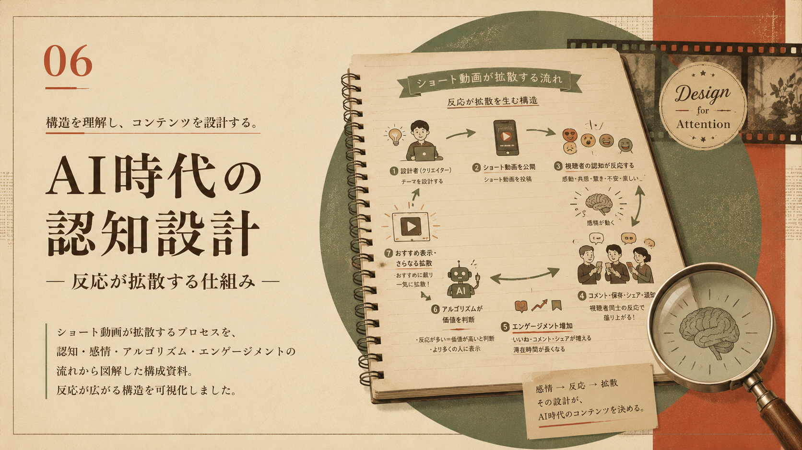
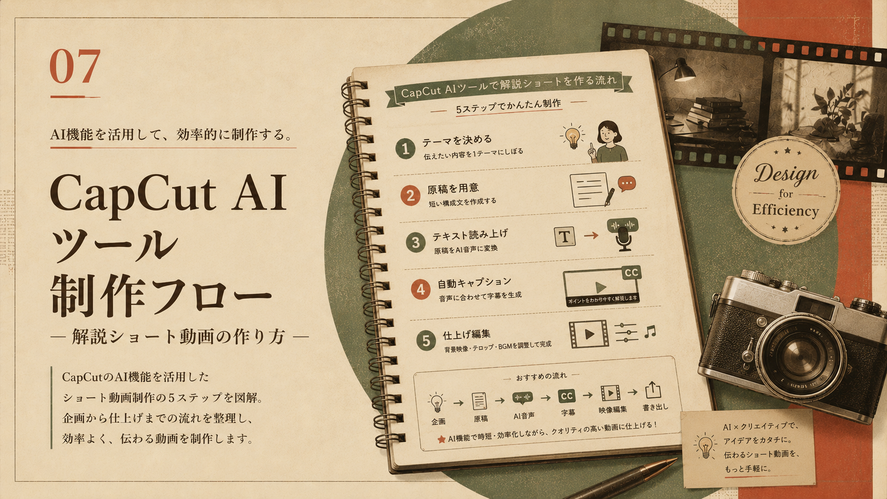
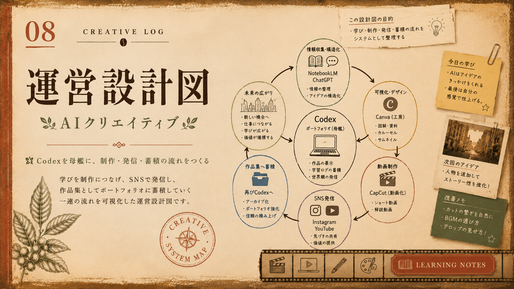
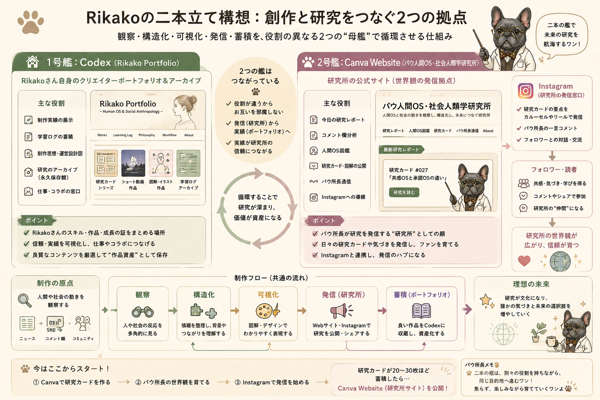
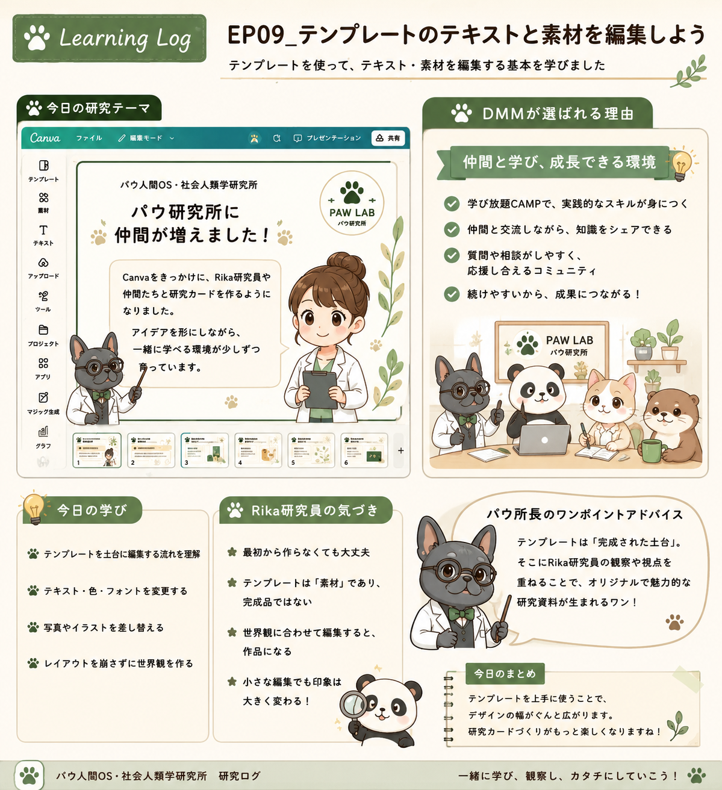

Profile
プロフィール
観察者ノート
AI動画制作を学びながら、企画・構成・生成AIの活用・動画編集・投稿までの流れを少しずつ実践しています。 まだ学習中ですが、日々の試行錯誤や気づきを記録しながら、ショート動画や解説コンテンツを制作しています。 成果物だけでなく、制作の課程や改善点も大切にしながら、自分らしい表現を育てていきたいです。 制作スタンス ・完成度より、まず形にすることを大切にする ・成果物だけでなく、学びの課程も記録する ・AIツールを組み合わせて、自分にある制作フローを探す ・日常の観察や気づきを、動画や文章のテーマに変換する ・少しずつ改善しながら、自分らしいポートフォリオを育て
Works
作品一覧
AI動画制作の学習過程で作った作品や、これから形にしていきたいテーマをまとめています。 完成品だけでなく、企画・構成・編集の試行錯誤も大切にしています。


肉球経済/パウ所長
「かわいいは経済を動かす」をテーマに、 パウ所長が30秒で肉球経済を解説するショート動画企画。
Instagramで更新予定 📝 ストーリーボード①を見る 📝 ストーリーボード②を見る 📝 ストーリーボード③を見る



CapCut AIツール制作フロー
CapCutのAI機能を活用した 解説ショート動画制作の5ステップを図解。 企画から編集までの流れを整理した制作資料です。
📖 制作フロー①を見る 📖 制作フロー②を見る
AIクリエイティブ運営設計図
Codexを母艦に、Canva・Premiere・Instagram・YouTubeを組み合わせながら、 学習ログ・制作フロー・研究チーム設定をひとつの運営設計ページとしてまとめています。
構成図を見る今後の展望｜Codex × Canva Website 二本立て構想
今後は、CodexをRika Portfolioとして作品・学習ログ・制作思想を蓄積する母艦にし、 コンテンツが育ってきた段階で、Canva Websiteを パウ人間OS・社会人類学研究所の公式サイトとして展開していく。

二つを分けることで、Rika研究員個人の成長記録と、 パウ研究所の世界観をそれぞれ育てていく。
🐾 パウ所長の見立て：母艦と展示場を分けることで、作品の蓄積と世界観の発信が整理される。
目次
- AIクリエイティブ思想設計
- 研究カードの制作フロー
- パウ研究所 研究チームメンバー紹介
- Canva AI活用ログ
思想設計図を見る ↗
研究カード制作フローを見る ↗
研究チーム紹介を見る ↗
Canva AI活用ログを見る ↗
Canva AI講座で試した実践を、パウ人間OS・社会人類学研究所の視点で再構成した学習ログ。
EP09｜Canva AI 学習ログ：パウ研究所版

教材の内容をそのまま写すのではなく、Rika研究員の観察・理解・制作プロセスとして再編集した記録。 Canvaを使って、学びを「研究カード」として視覚化する練習ログ。
🐾 Reviewed by パウ所長
更新履歴
2026.07.02｜Canva AI 学習ログ EP09と運営設計図を更新
Canva AI講座の学びを、パウ研究所版の観察ログとして再構成。 あわせて、CodexとCanva Websiteの二本立て運営構想を整理した。
学習・制作・運営設計がつながり、Codex母艦の方向性がより明確になった更新日。
Study Notes
学習記録
プロンプトは「画角・動き・質感」を分けて書く
一文に詰め込むより、カメラ、被写体、雰囲気を整理すると再現性が上がりました。
短尺動画は最初の2秒で意図を伝える
タイトル、明るい画、動きのある要素を冒頭に置くと、見始めの印象が強くなります。
生成素材は編集前提で余白を作る
テロップやロゴの配置場所を考えて生成すると、後工程の調整がスムーズでした。
Tools
使用ツール一覧
- ChatGPT
- NotebookLM
- CapCut
- Premiere Pro
- Kling
- Codex
Contact
Instagramで制作ログを見る
日々の作品だけでなく、AIニュース、社会の変化。気になったテーマを観察しながら、点と点をつなぐシンセサイザー実験ログをInstagramで更新しています。
Instagramで見る